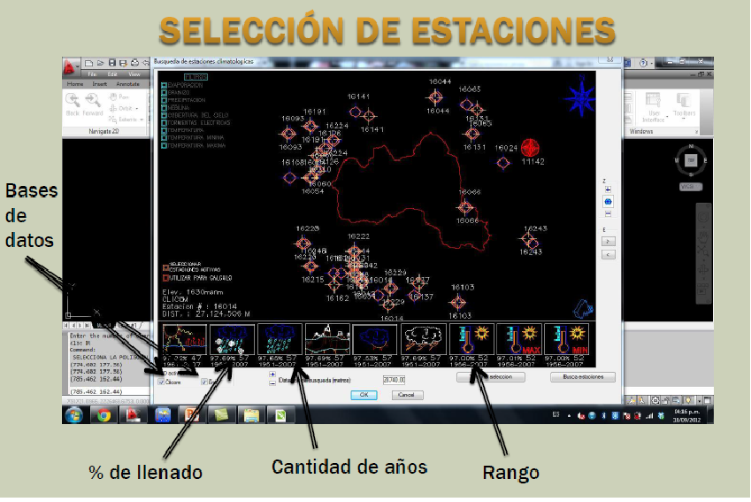

Previous
Top
Next
Seleccion de estaciones de trabajo.
Se analiza cada estacion temporal y espacialmente como se indica en la figura, una ves que se ha decidido seleccionar la estacion se da click en el boton de "utilizar para calculo"
